2025 National 5 Physics - Section 2 questions
Source: Scottish Qualifications Authority (SQA) / Qualifications Scotland. This is a StemInteract HTML companion, not an official HTML edition. Selectable text is supplied alongside original page images. Use the images or original PDF for equations, powers, fractions, vector notation, tables and diagrams; text extraction cannot fully preserve mathematical layout.
Jump to a question
PDF page 1
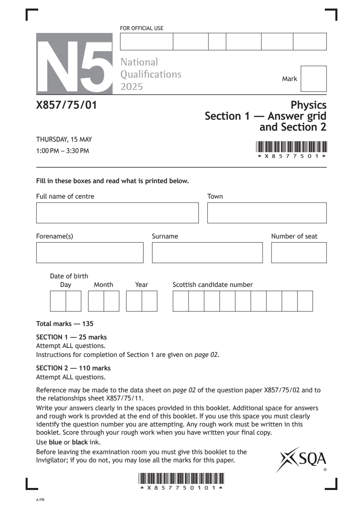
Selectable page text
FOR OFFICIAL USE
N5
National
Qualications
Mark
2025
X857/75/01 Physics
Section 1 — Answer grid
and Section 2
THURSDAY, 15 MAY
1:00 PM – 3:30 PM
*X8577501*
Fill in these boxes and read what is printed below.
Full name of centre Town
Forename(s) Surname Number of seat
Date of birth
Day Month Year Scottish candidate number
Total marks — 135
SECTION 1 — 25 marks
Attempt ALL questions.
Instructions for completion of Section 1 are given on page 02.
SECTION 2 — 110 marks
Attempt ALL questions.
Reference may be made to the data sheet on page 02 of the question paper X857/75/02 and to
the relationships sheet X857/75/11.
Write your answers clearly in the spaces provided in this booklet. Additional space for answers
and rough work is provided at the end of this booklet. If you use this space you must clearly
identify the question number you are attempting. Any rough work must be written in this
booklet. Score through your rough work when you have written your final copy.
Use blue or black ink.
Before leaving the examination room you must give this booklet to the
Invigilator; if you do not, you may lose all the marks for this paper.
©
*X857750101*
A/PBPDF page 2
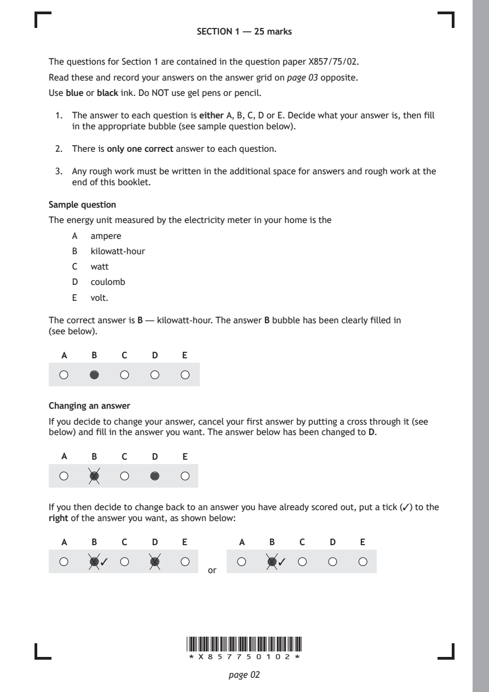
Selectable page text
SECTION 1 — 25 marks
The questions for Section 1 are contained in the question paper X857/75/02.
Read these and record your answers on the answer grid on page 03 opposite.
Use blue or black ink. Do NOT use gel pens or pencil.
1. The answer to each question is either A, B, C, D or E. Decide what your answer is, then fill
in the appropriate bubble (see sample question below).
2. There is only one correct answer to each question.
3. Any rough work must be written in the additional space for answers and rough work at the
end of this booklet.
Sample question
The energy unit measured by the electricity meter in your home is the
A ampere
B kilowatt-hour
C watt
D coulomb
E volt.
The correct answer is B — kilowatt-hour. The answer B bubble has been clearly filled in
(see below).
A B C D E
Changing an answer
If you decide to change your answer, cancel your first answer by putting a cross through it (see
below) and fill in the answer you want. The answer below has been changed to D.
A B C D E
If you then decide to change back to an answer you have already scored out, put a tick (✓) to the
right of the answer you want, as shown below:
A B C D E A B C D E
or
*X857750102*
page 02PDF page 3

Selectable page text
SECTION 1 — Answer grid
*OBJ25AE1*
A B C D E
1
2
3
4
5
6
7
8
9
10
11
12
13
14
15
16
17
18
19
20
21
22
23
24
25
*X857750103*
page 03 [Turn overPDF page 4

Selectable page text
[BLANK PAGE]
DO NOT WRITE ON THIS PAGE
*X857750104*
page 04PDF page 5

Selectable page text
[Turn over for SECTION 2
DO NOT WRITE ON THIS PAGE
*X857750105*
page 05PDF page 6
Section 2, Question 1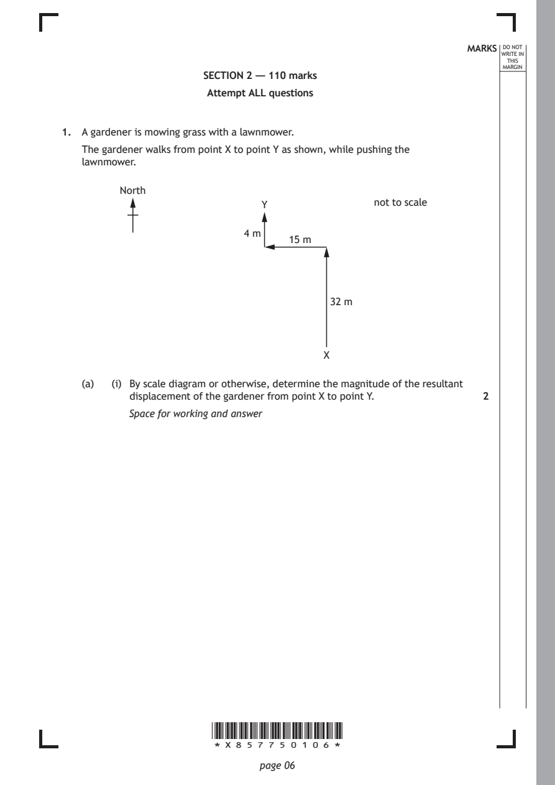
Selectable page text
MARKS _{W}^{D}_{R}^{O}_{I} _{T}^{N}OT
E IN
THIS
MARGIN
SECTION 2 — 110 marks
Attempt ALL questions
1. A gardener is mowing grass with a lawnmower.
The gardener walks from point X to point Y as shown, while pushing the
lawnmower.
North
Y not to scale
4 m
15 m
32 m
X
(a) (i) By scale diagram or otherwise, determine the magnitude of the resultant
displacement of the gardener from point X to point Y. 2
Space for working and answer
*X857750106*
page 06PDF page 7
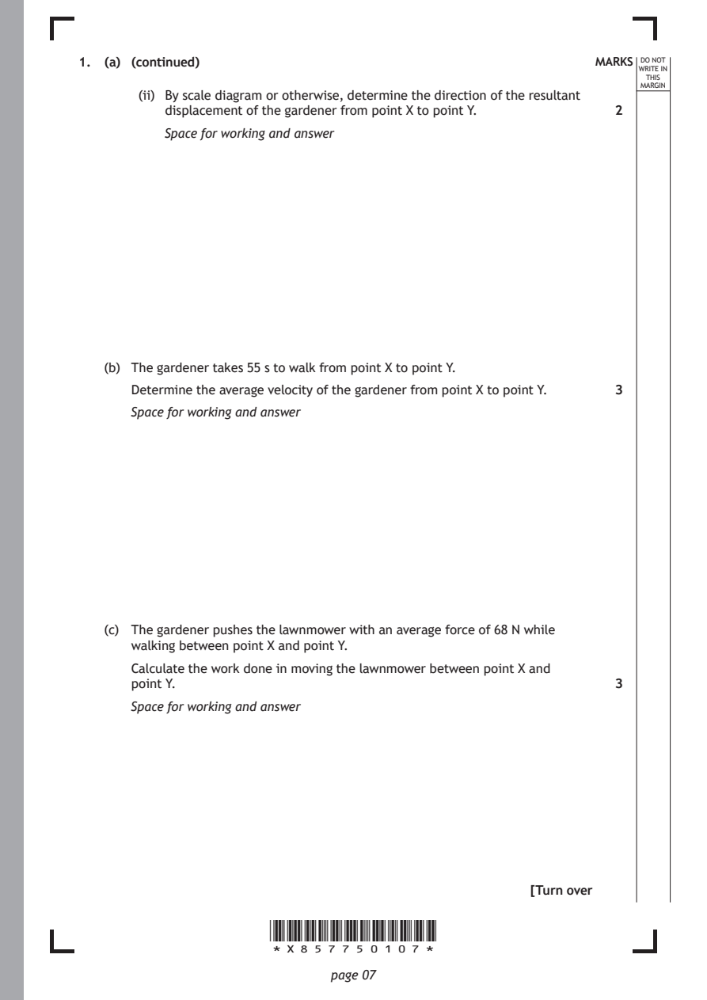
Selectable page text
1. (a) (continued) MARKS _{W}^{D}_{R}^{O}_{I} _{T}^{N}OT
E IN
THIS
MARGIN
(ii) By scale diagram or otherwise, determine the direction of the resultant
displacement of the gardener from point X to point Y. 2
Space for working and answer
(b) The gardener takes 55 s to walk from point X to point Y.
Determine the average velocity of the gardener from point X to point Y. 3
Space for working and answer
(c) The gardener pushes the lawnmower with an average force of 68 N while
walking between point X and point Y.
Calculate the work done in moving the lawnmower between point X and
point Y. 3
Space for working and answer
[Turn over
*X857750107*
page 07PDF page 8
Section 2, Question 2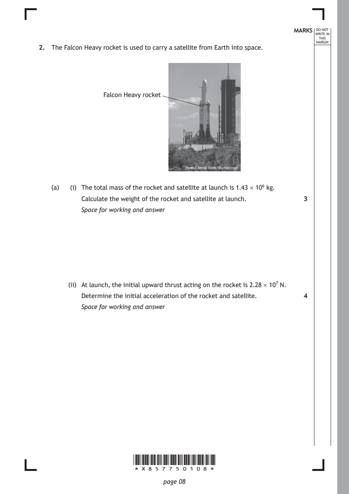
Selectable page text
MARKS _{W}^{D}_{R}^{O}_{I} _{T}^{N}OT
E IN
THIS
MARGIN
2. The Falcon Heavy rocket is used to carry a satellite from Earth into space.
Falcon Heavy rocket
Hasbul Aerial Stock/Shutterstock
(a) (i) The total mass of the rocket and satellite at launch is 1.43 × 10⁶ kg.
Calculate the weight of the rocket and satellite at launch. 3
Space for working and answer
(ii) At launch, the initial upward thrust acting on the rocket is 2.28 × 10⁷ N.
Determine the initial acceleration of the rocket and satellite. 4
Space for working and answer
*X857750108*
page 08PDF page 9
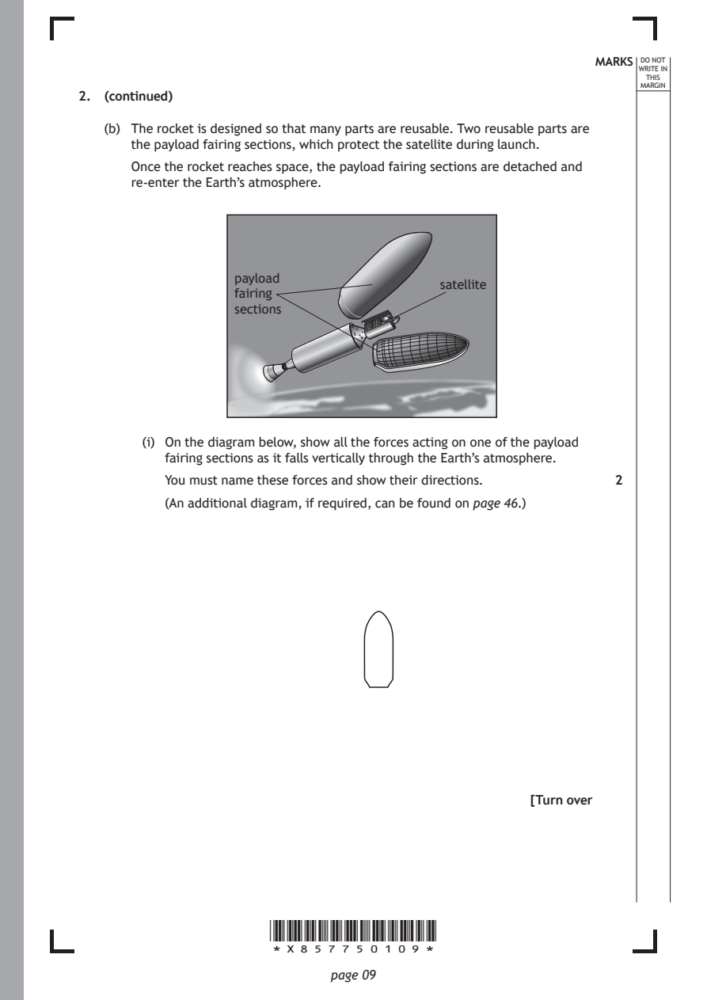
Selectable page text
MARKS _{W}^{D}_{R}^{O}_{I} _{T}^{N}OT
E IN
THIS
MARGIN
2. (continued)
(b) The rocket is designed so that many parts are reusable. Two reusable parts are
the payload fairing sections, which protect the satellite during launch.
Once the rocket reaches space, the payload fairing sections are detached and
re-enter the Earth’s atmosphere.
payload
satellite
fairing
sections
(i) On the diagram below, show all the forces acting on one of the payload
fairing sections as it falls vertically through the Earth’s atmosphere.
You must name these forces and show their directions. 2
(An additional diagram, if required, can be found on page 46.)
[Turn over
*X857750109*
page 09PDF page 10
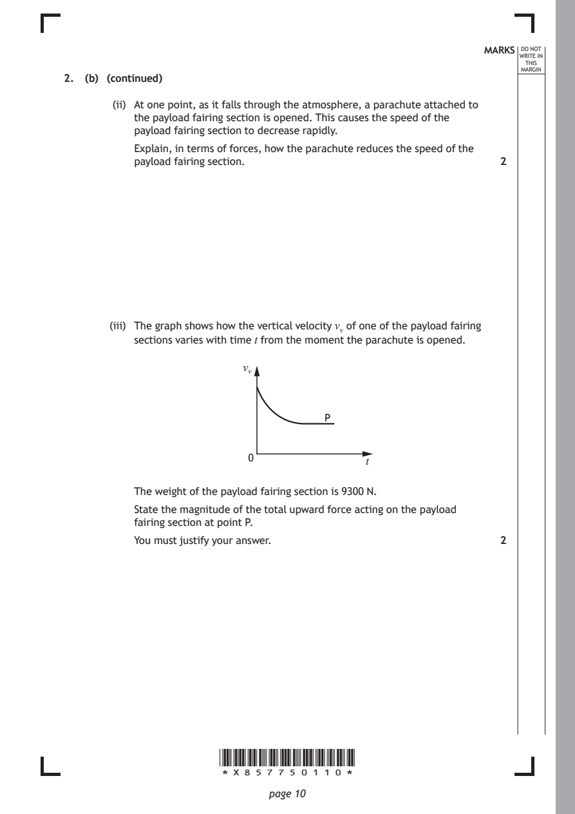
Selectable page text
MARKS _{W}^{D}_{R}^{O}_{I} _{T}^{N}OT
E IN
THIS
MARGIN
2. (b) (continued)
(ii) At one point, as it falls through the atmosphere, a parachute attached to
the payload fairing section is opened. This causes the speed of the
payload fairing section to decrease rapidly.
Explain, in terms of forces, how the parachute reduces the speed of the
payload fairing section. 2
(iii) The graph shows how the vertical velocity vᵥ of one of the payload fairing
sections varies with time t from the moment the parachute is opened.
vᵥ
P
0
t
The weight of the payload fairing section is 9300 N.
State the magnitude of the total upward force acting on the payload
fairing section at point P.
You must justify your answer. 2
*X857750110*
page 10PDF page 11

Selectable page text
[Turn over for next question
DO NOT WRITE ON THIS PAGE
*X857750111*
page 11PDF page 12
Section 2, Question 3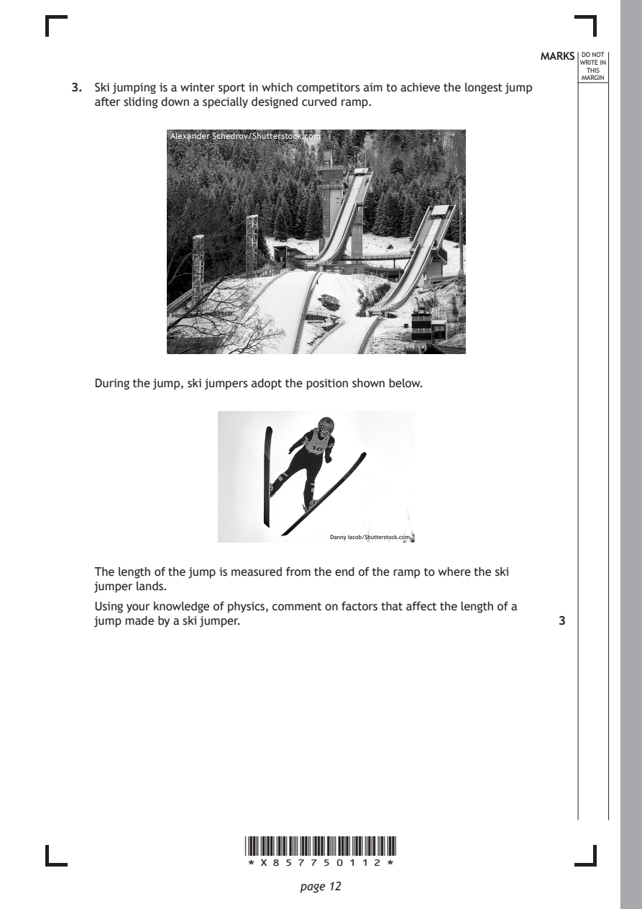
Selectable page text
MARKS _{W}^{D}_{R}^{O}_{I} _{T}^{N}OT
E IN
THIS
MARGIN
3. Ski jumping is a winter sport in which competitors aim to achieve the longest jump
after sliding down a specially designed curved ramp.
During the jump, ski jumpers adopt the position shown below.
The length of the jump is measured from the end of the ramp to where the ski
jumper lands.
Using your knowledge of physics, comment on factors that affect the length of a
jump made by a ski jumper. 3
*X857750112*
page 12PDF page 13
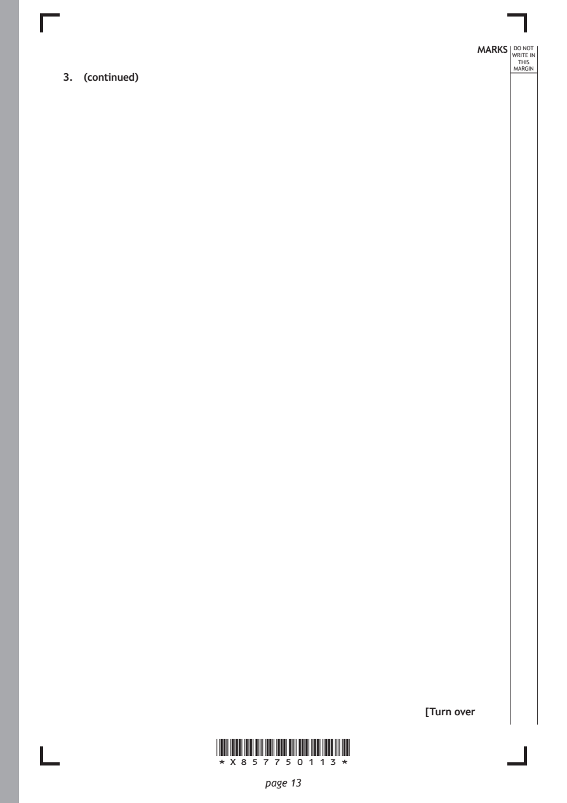
Selectable page text
MARKS _{W}^{D}_{R}^{O}_{I} _{T}^{N}OT
E IN
THIS
MARGIN
3. (continued)
[Turn over
*X857750113*
page 13PDF page 14
Section 2, Question 4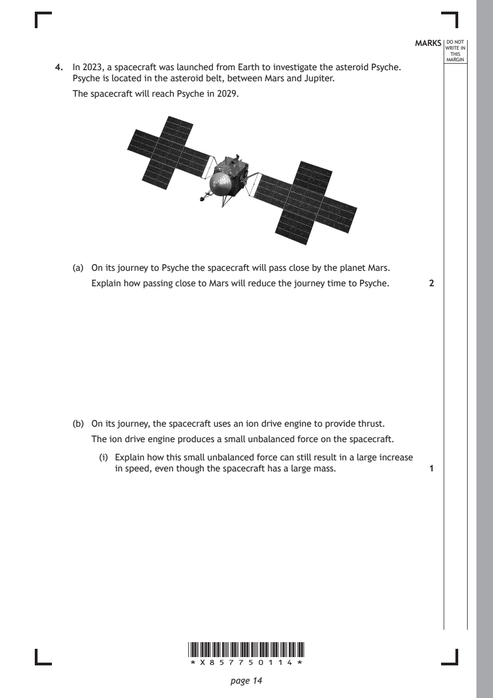
Selectable page text
MARKS _{W}^{D}_{R}^{O}_{I} _{T}^{N}OT
E IN
THIS
MARGIN
4. In 2023, a spacecraft was launched from Earth to investigate the asteroid Psyche.
Psyche is located in the asteroid belt, between Mars and Jupiter.
The spacecraft will reach Psyche in 2029.
(a) On its journey to Psyche the spacecraft will pass close by the planet Mars.
Explain how passing close to Mars will reduce the journey time to Psyche. 2
(b) On its journey, the spacecraft uses an ion drive engine to provide thrust.
The ion drive engine produces a small unbalanced force on the spacecraft.
(i) Explain how this small unbalanced force can still result in a large increase
in speed, even though the spacecraft has a large mass. 1
*X857750114*
page 14PDF page 15
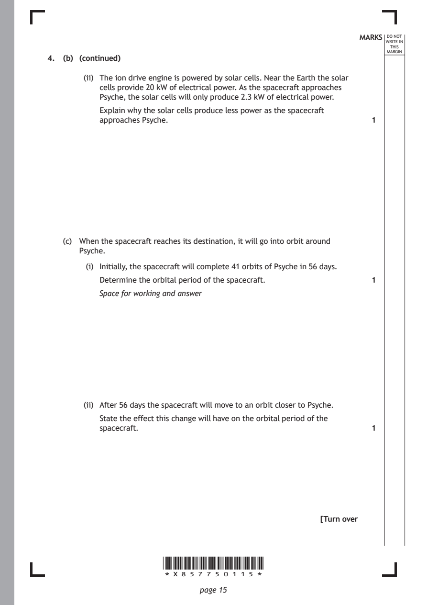
Selectable page text
MARKS _{W}^{D}_{R}^{O}_{I} _{T}^{N}OT
E IN
THIS
MARGIN
4. (b) (continued)
(ii) The ion drive engine is powered by solar cells. Near the Earth the solar
cells provide 20 kW of electrical power. As the spacecraft approaches
Psyche, the solar cells will only produce 2.3 kW of electrical power.
Explain why the solar cells produce less power as the spacecraft
approaches Psyche. 1
(c) When the spacecraft reaches its destination, it will go into orbit around
Psyche.
(i) Initially, the spacecraft will complete 41 orbits of Psyche in 56 days.
Determine the orbital period of the spacecraft. 1
Space for working and answer
(ii) After 56 days the spacecraft will move to an orbit closer to Psyche.
State the effect this change will have on the orbital period of the
spacecraft. 1
[Turn over
*X857750115*
page 15PDF page 16
Section 2, Question 5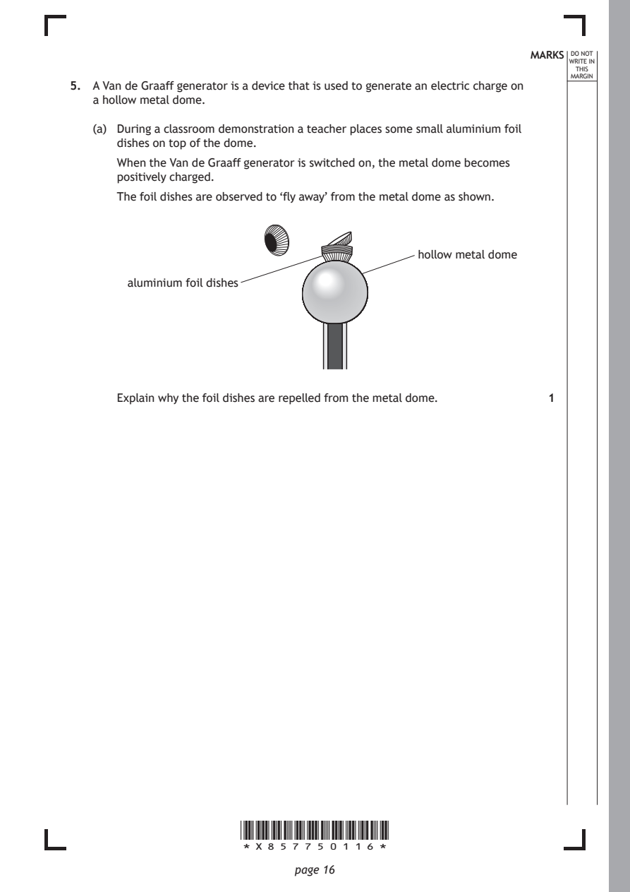
Selectable page text
MARKS _{W}^{D}_{R}^{O}_{I} _{T}^{N}OT
E IN
THIS
MARGIN
5. A Van de Graaff generator is a device that is used to generate an electric charge on
a hollow metal dome.
(a) During a classroom demonstration a teacher places some small aluminium foil
dishes on top of the dome.
When the Van de Graaff generator is switched on, the metal dome becomes
positively charged.
The foil dishes are observed to ‘fly away’ from the metal dome as shown.
hollow metal dome
aluminium foil dishes
Explain why the foil dishes are repelled from the metal dome. 1
*X857750116*
page 16PDF page 17
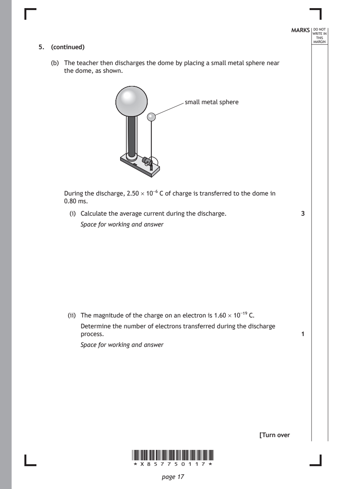
Selectable page text
MARKS _{W}^{D}_{R}^{O}_{I} _{T}^{N}OT
E IN
THIS
MARGIN
5. (continued)
(b) The teacher then discharges the dome by placing a small metal sphere near
the dome, as shown.
small metal sphere
During the discharge, 2.50 × 10⁻⁶ C of charge is transferred to the dome in
0.80 ms.
(i) Calculate the average current during the discharge. 3
Space for working and answer
(ii) The magnitude of the charge on an electron is 1.60 × 10⁻¹⁹ C.
Determine the number of electrons transferred during the discharge
process. 1
Space for working and answer
[Turn over
*X857750117*
page 17PDF page 18
Section 2, Question 6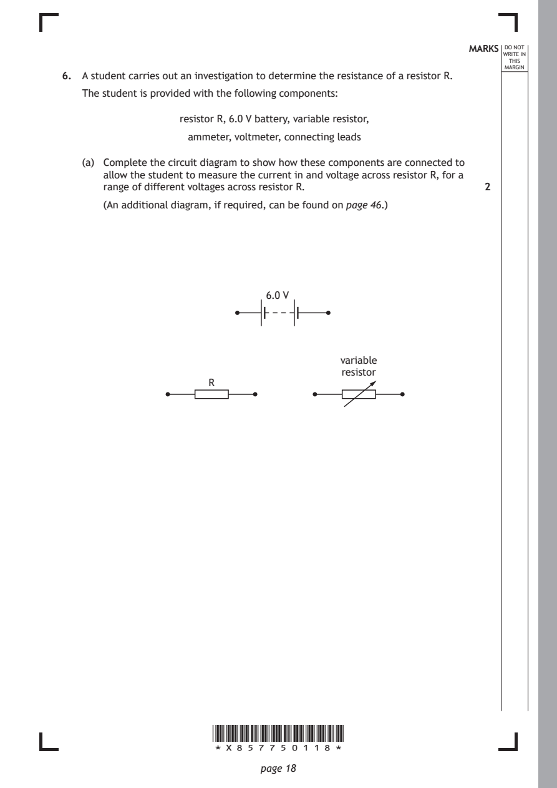
Selectable page text
MARKS _{W}^{D}_{R}^{O}_{I} _{T}^{N}OT
E IN
THIS
MARGIN
6. A student carries out an investigation to determine the resistance of a resistor R.
The student is provided with the following components:
resistor R, 6.0 V battery, variable resistor,
ammeter, voltmeter, connecting leads
(a) Complete the circuit diagram to show how these components are connected to
allow the student to measure the current in and voltage across resistor R, for a
range of different voltages across resistor R. 2
(An additional diagram, if required, can be found on page 46.)
6.0 V
variable
resistor
R
*X857750118*
page 18PDF page 19
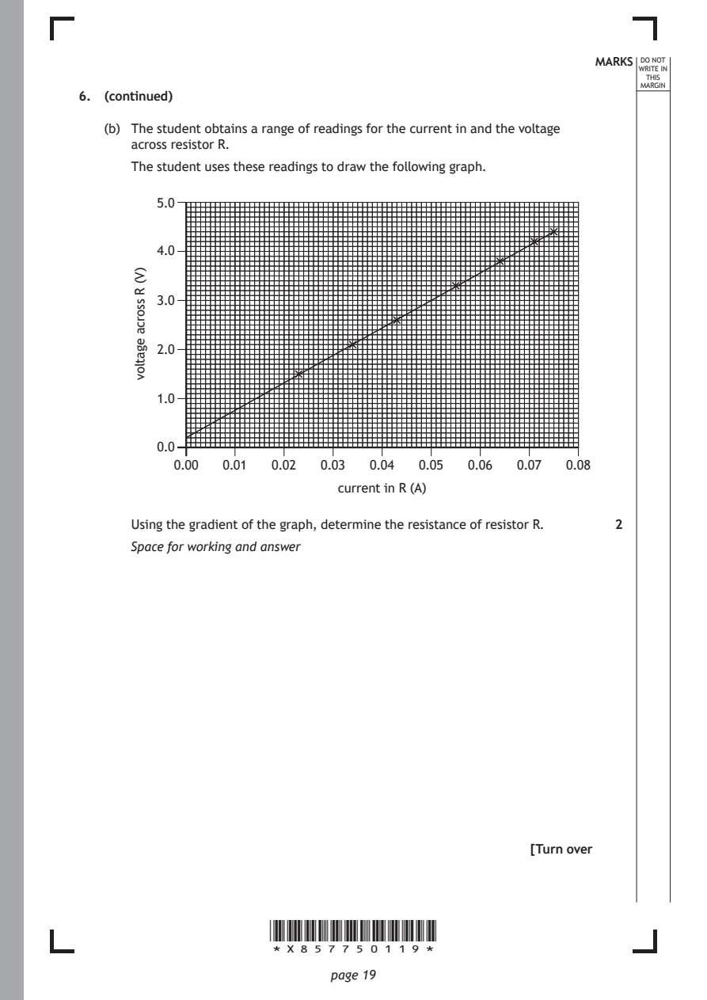
Selectable page text
MARKS _{W}^{D}_{R}^{O}_{I} _{T}^{N}OT
E IN
THIS
MARGIN
6. (continued)
(b) The student obtains a range of readings for the current in and the voltage
across resistor R.
The student uses these readings to draw the following graph.
0.00
current in R (A)
*X857750119*
page 19
)V(
R
ssorca
egatlov
5.0
4.0
3.0
2.0
1.0
0.0
0.01 0.02 0.03 0.04 0.05 0.06 0.07 0.08
Using the gradient of the graph, determine the resistance of resistor R. 2
Space for working and answer
[Turn overPDF page 20
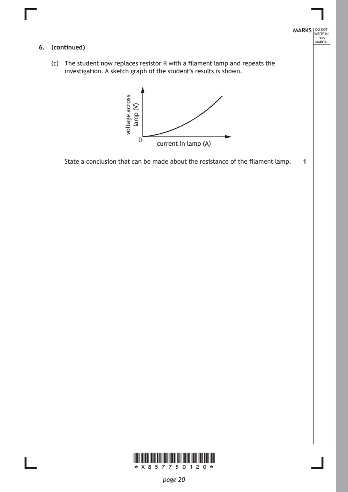
Selectable page text
MARKS _{W}^{D}_{R}^{O}_{I} _{T}^{N}OT
E IN
THIS
MARGIN
6. (continued)
(c) The student now replaces resistor R with a filament lamp and repeats the
investigation. A sketch graph of the student’s results is shown.
0
current in lamp (A)
*X857750120*
page 20
ssorca
egatlov
)V(
pmal
State a conclusion that can be made about the resistance of the filament lamp. 1PDF page 21
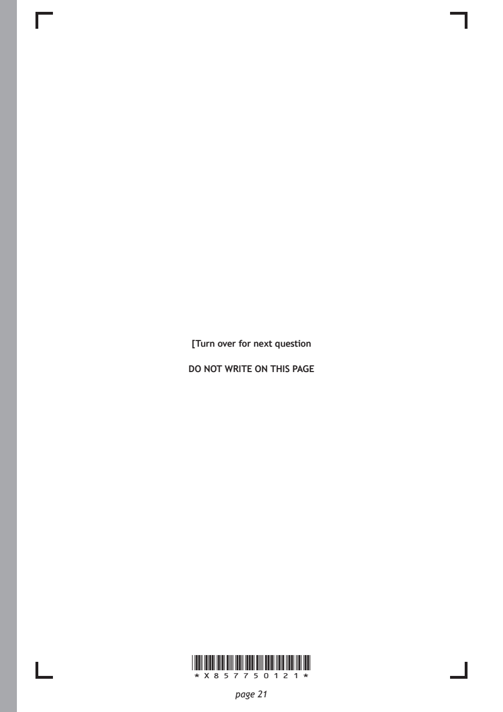
Selectable page text
[Turn over for next question
DO NOT WRITE ON THIS PAGE
*X857750121*
page 21PDF page 22
Section 2, Question 7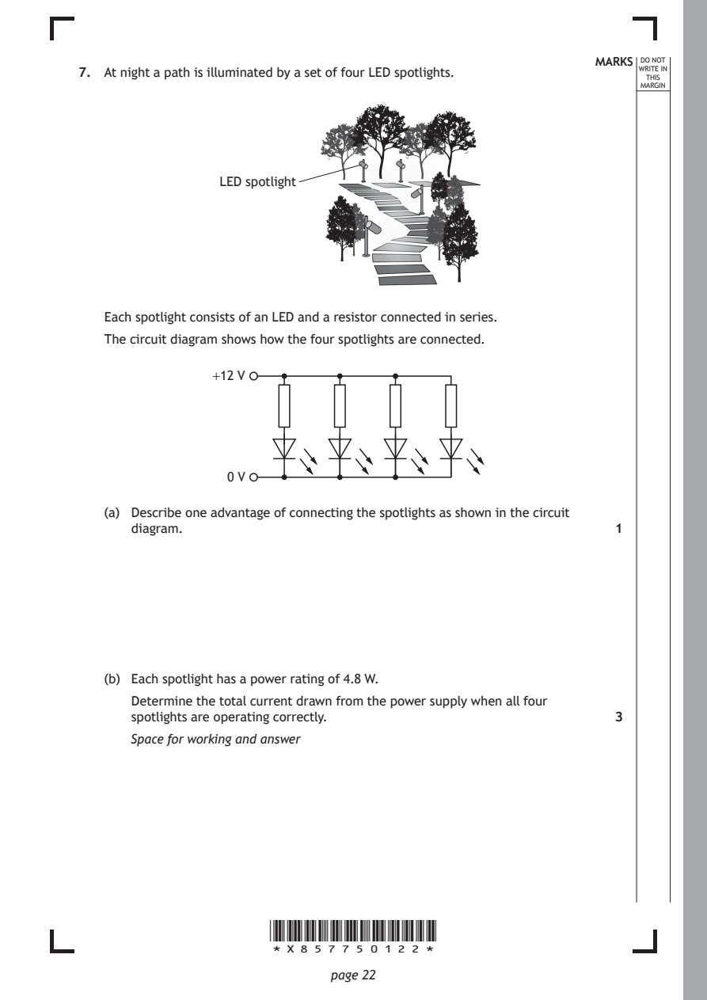
Selectable page text
MARKS _{W}^{D}_{R}^{O}_{I} _{T}^{N}OT
7. At night a path is illuminated by a set of four LED spotlights. E IN
THIS
MARGIN
LED spotlight
Each spotlight consists of an LED and a resistor connected in series.
The circuit diagram shows how the four spotlights are connected.
+12 V
0 V
(a) Describe one advantage of connecting the spotlights as shown in the circuit
diagram. 1
(b) Each spotlight has a power rating of 4.8 W.
Determine the total current drawn from the power supply when all four
spotlights are operating correctly. 3
Space for working and answer
*X857750122*
page 22PDF page 23
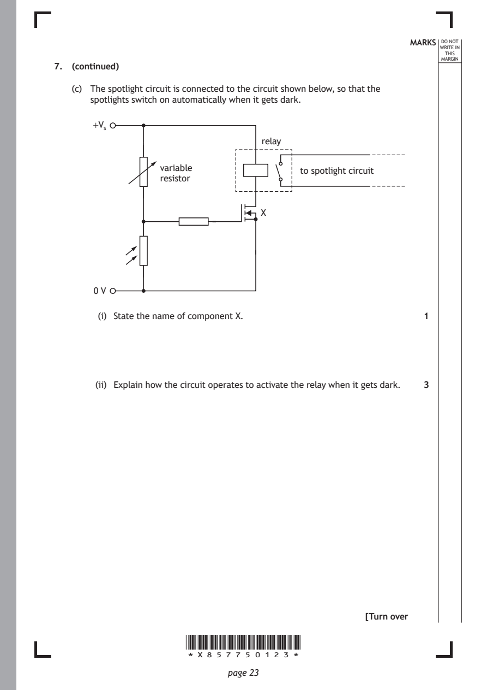
Selectable page text
MARKS _{W}^{D}_{R}^{O}_{I} _{T}^{N}OT
E IN
THIS
MARGIN
7. (continued)
(c) The spotlight circuit is connected to the circuit shown below, so that the
spotlights switch on automatically when it gets dark.
+Vₛ
relay
variable
to spotlight circuit
resistor
X
0 V
(i) State the name of component X. 1
(ii) Explain how the circuit operates to activate the relay when it gets dark. 3
[Turn over
*X857750123*
page 23PDF page 24
Section 2, Question 8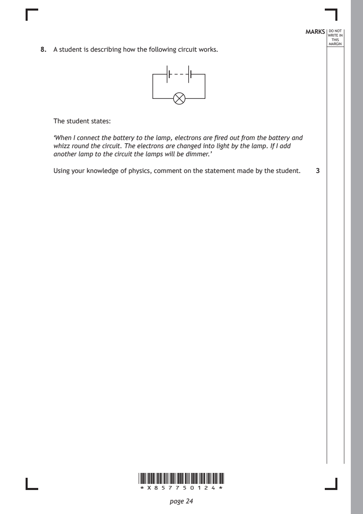
Selectable page text
MARKS _{W}^{D}_{R}^{O}_{I} _{T}^{N}OT
E IN
THIS
MARGIN
8. A student is describing how the following circuit works.
The student states:
‘When I connect the battery to the lamp, electrons are fired out from the battery and
whizz round the circuit. The electrons are changed into light by the lamp. If I add
another lamp to the circuit the lamps will be dimmer.’
Using your knowledge of physics, comment on the statement made by the student. 3
*X857750124*
page 24PDF page 25
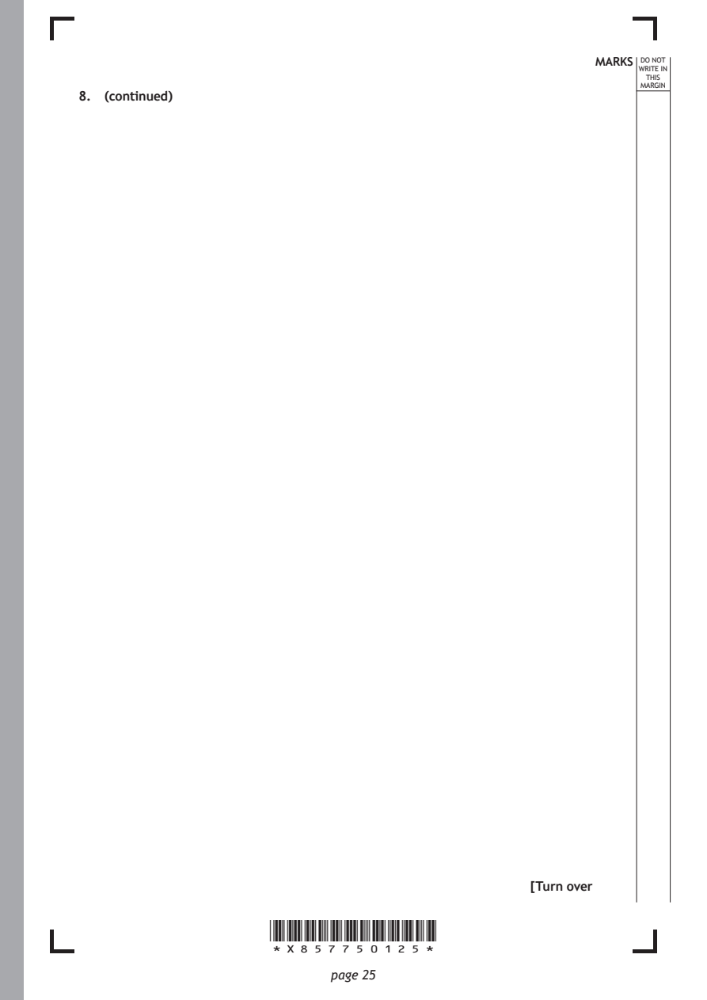
Selectable page text
MARKS _{W}^{D}_{R}^{O}_{I} _{T}^{N}OT
E IN
THIS
MARGIN
8. (continued)
[Turn over
*X857750125*
page 25PDF page 26
Section 2, Question 9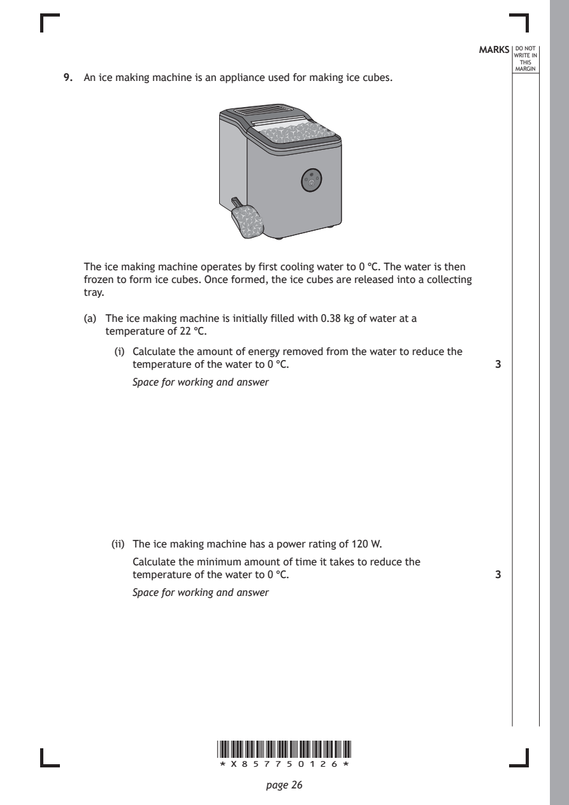
Selectable page text
MARKS _{W}^{D}_{R}^{O}_{I} _{T}^{N}OT
E IN
THIS
MARGIN
9. An ice making machine is an appliance used for making ice cubes.
The ice making machine operates by first cooling water to 0 °C. The water is then
frozen to form ice cubes. Once formed, the ice cubes are released into a collecting
tray.
(a) The ice making machine is initially filled with 0.38 kg of water at a
temperature of 22 °C.
(i) Calculate the amount of energy removed from the water to reduce the
temperature of the water to 0 °C. 3
Space for working and answer
(ii) The ice making machine has a power rating of 120 W.
Calculate the minimum amount of time it takes to reduce the
temperature of the water to 0 °C. 3
Space for working and answer
*X857750126*
page 26PDF page 27
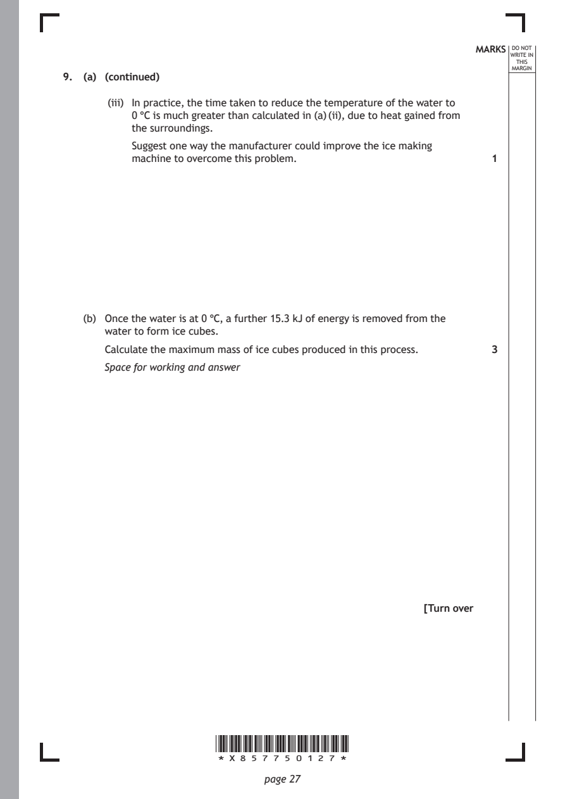
Selectable page text
MARKS _{W}^{D}_{R}^{O}_{I} _{T}^{N}OT
E IN
THIS
MARGIN
9. (a) (continued)
(iii) In practice, the time taken to reduce the temperature of the water to
0 °C is much greater than calculated in (a) (ii), due to heat gained from
the surroundings.
Suggest one way the manufacturer could improve the ice making
machine to overcome this problem. 1
(b) Once the water is at 0 °C, a further 15.3 kJ of energy is removed from the
water to form ice cubes.
Calculate the maximum mass of ice cubes produced in this process. 3
Space for working and answer
[Turn over
*X857750127*
page 27PDF page 28
Section 2, Question 10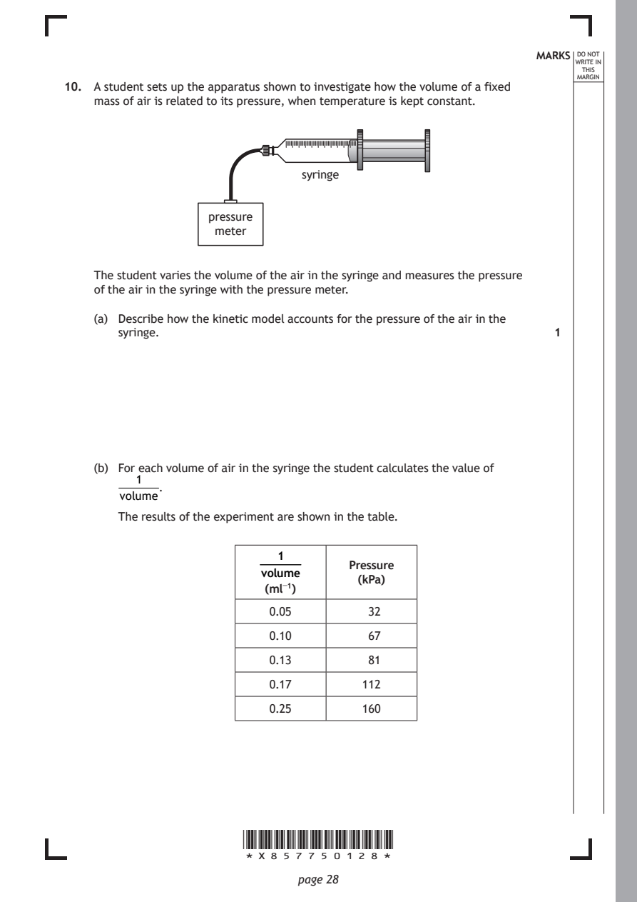
Selectable page text
MARKS _{W}^{D}_{R}^{O}_{I} _{T}^{N}OT
E IN
THIS
MARGIN
10. A student sets up the apparatus shown to investigate how the volume of a fixed
mass of air is related to its pressure, when temperature is kept constant.
syringe
pressure
meter
The student varies the volume of the air in the syringe and measures the pressure
of the air in the syringe with the pressure meter.
(a) Describe how the kinetic model accounts for the pressure of the air in the
syringe. 1
(b) For each volume of air in the syringe the student calculates the value of
1
.
volume
The results of the experiment are shown in the table.
1
Pressure
volume
(kPa)
(ml⁻¹)
0.05 32
0.10 67
0.13 81
0.17 112
0.25 160
*X857750128*
page 28PDF page 29
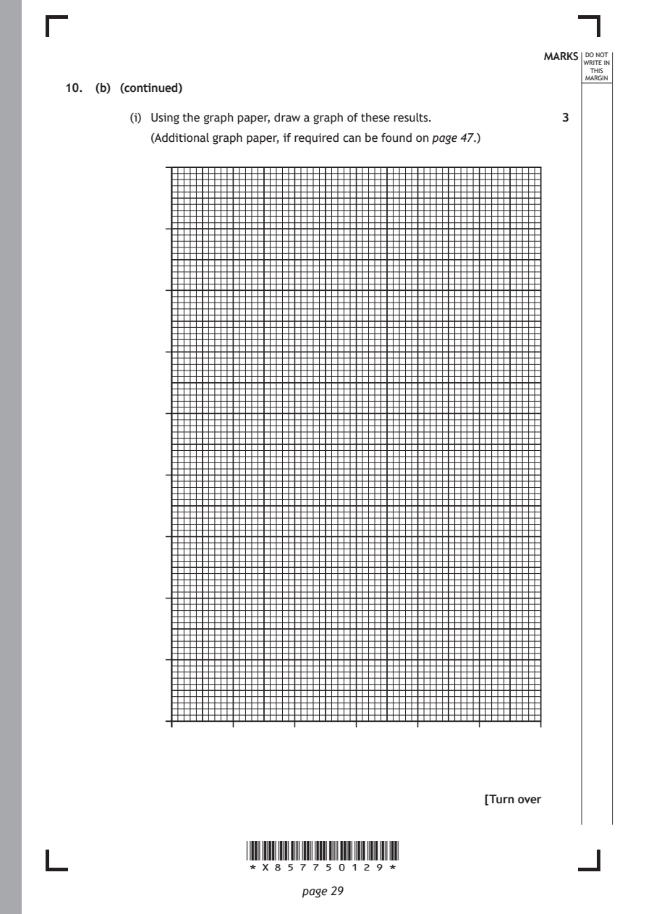
Selectable page text
MARKS _{W}^{D}_{R}^{O}_{I} _{T}^{N}OT
E IN
THIS
MARGIN
10. (b) (continued)
(i) Using the graph paper, draw a graph of these results. 3
(Additional graph paper, if required can be found on page 47.)
[Turn over
*X857750129*
page 29PDF page 30
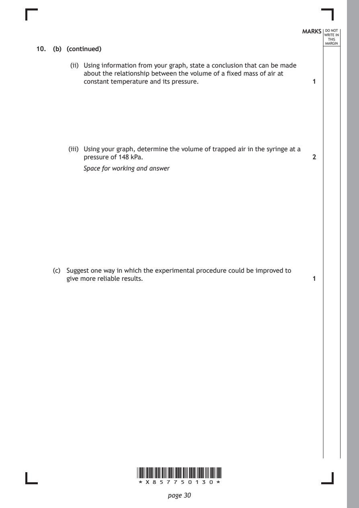
Selectable page text
MARKS _{W}^{D}_{R}^{O}_{I} _{T}^{N}OT
E IN
THIS
MARGIN
10. (b) (continued)
(ii) Using information from your graph, state a conclusion that can be made
about the relationship between the volume of a fixed mass of air at
constant temperature and its pressure. 1
(iii) Using your graph, determine the volume of trapped air in the syringe at a
pressure of 148 kPa. 2
Space for working and answer
(c) Suggest one way in which the experimental procedure could be improved to
give more reliable results. 1
*X857750130*
page 30PDF page 31
Selectable page text
[Turn over for next question
DO NOT WRITE ON THIS PAGE
*X857750131*
page 31PDF page 32
Section 2, Question 11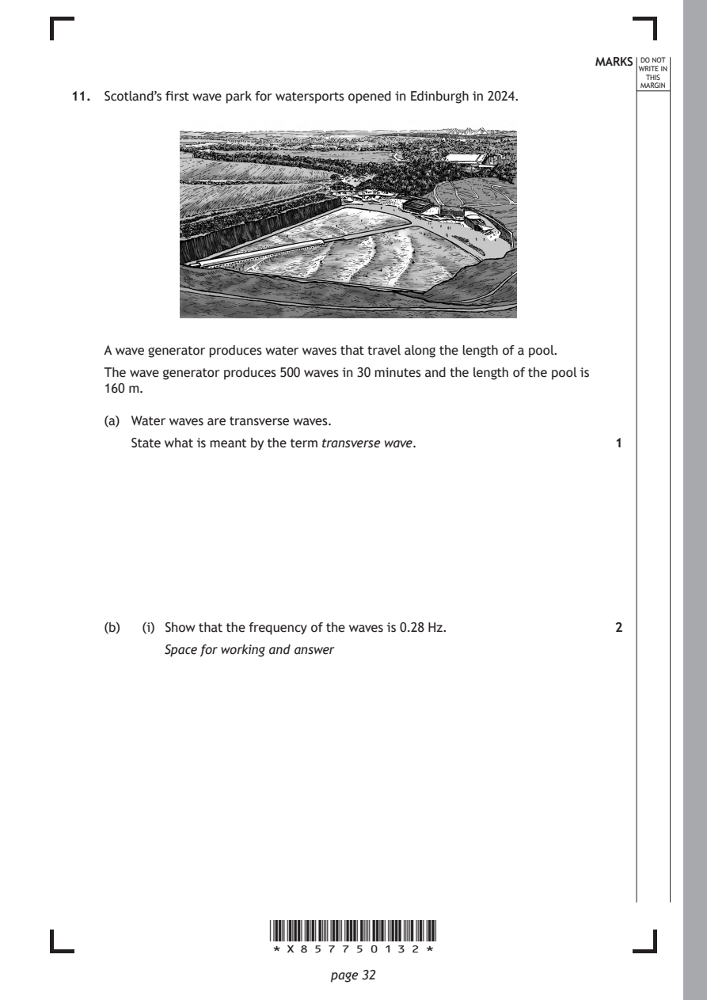
Selectable page text
MARKS _{W}^{D}_{R}^{O}_{I} _{T}^{N}OT
E IN
THIS
MARGIN
11. Scotland’s first wave park for watersports opened in Edinburgh in 2024.
A wave generator produces water waves that travel along the length of a pool.
The wave generator produces 500 waves in 30 minutes and the length of the pool is
160 m.
(a) Water waves are transverse waves.
State what is meant by the term transverse wave. 1
(b) (i) Show that the frequency of the waves is 0.28 Hz. 2
Space for working and answer
*X857750132*
page 32PDF page 33
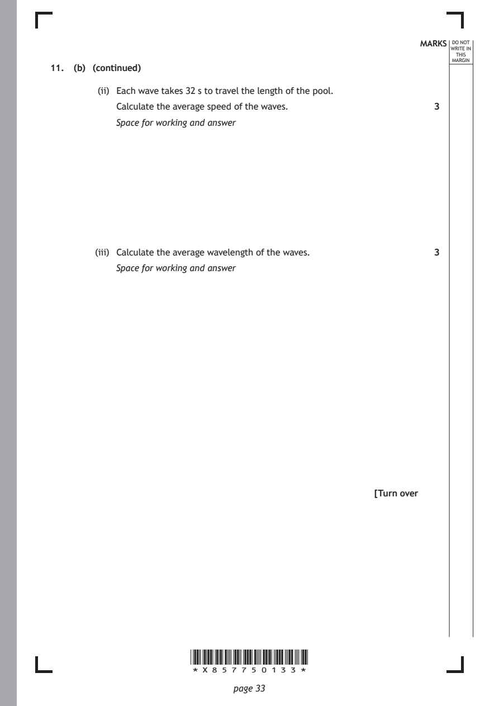
Selectable page text
MARKS _{W}^{D}_{R}^{O}_{I} _{T}^{N}OT
E IN
THIS
MARGIN
11. (b) (continued)
(ii) Each wave takes 32 s to travel the length of the pool.
Calculate the average speed of the waves. 3
Space for working and answer
(iii) Calculate the average wavelength of the waves. 3
Space for working and answer
[Turn over
*X857750133*
page 33PDF page 34
Section 2, Question 12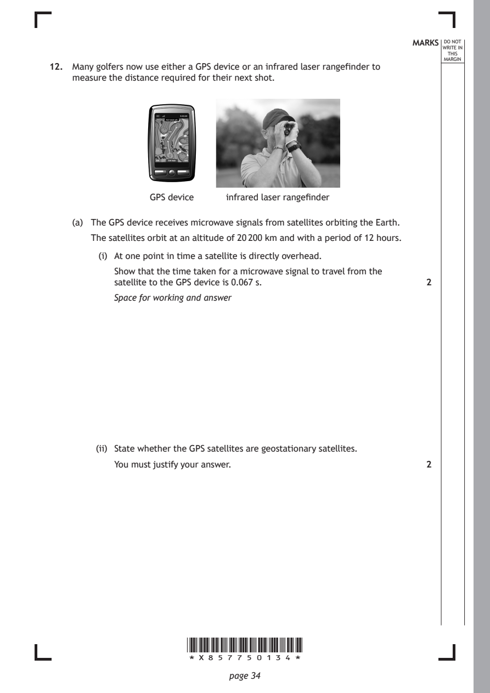
Selectable page text
MARKS _{W}^{D}_{R}^{O}_{I} _{T}^{N}OT
E IN
THIS
MARGIN
12. Many golfers now use either a GPS device or an infrared laser rangefinder to
measure the distance required for their next shot.
GPS device infrared laser rangefinder
(a) The GPS device receives microwave signals from satellites orbiting the Earth.
The satellites orbit at an altitude of 20 200 km and with a period of 12 hours.
(i) At one point in time a satellite is directly overhead.
Show that the time taken for a microwave signal to travel from the
satellite to the GPS device is 0.067 s. 2
Space for working and answer
(ii) State whether the GPS satellites are geostationary satellites.
You must justify your answer. 2
*X857750134*
page 34PDF page 35
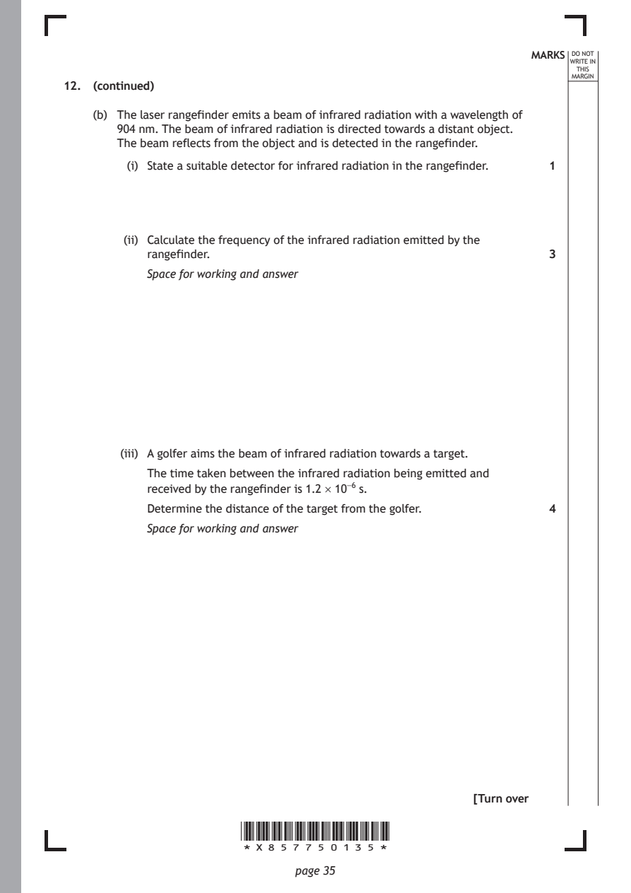
Selectable page text
MARKS _{W}^{D}_{R}^{O}_{I} _{T}^{N}OT
E IN
THIS
MARGIN
12. (continued)
(b) The laser rangefinder emits a beam of infrared radiation with a wavelength of
904 nm. The beam of infrared radiation is directed towards a distant object.
The beam reflects from the object and is detected in the rangefinder.
(i) State a suitable detector for infrared radiation in the rangefinder. 1
(ii) Calculate the frequency of the infrared radiation emitted by the
rangefinder. 3
Space for working and answer
(iii) A golfer aims the beam of infrared radiation towards a target.
The time taken between the infrared radiation being emitted and
received by the rangefinder is 1.2 × 10⁻⁶ s.
Determine the distance of the target from the golfer. 4
Space for working and answer
[Turn over
*X857750135*
page 35PDF page 36
Section 2, Question 13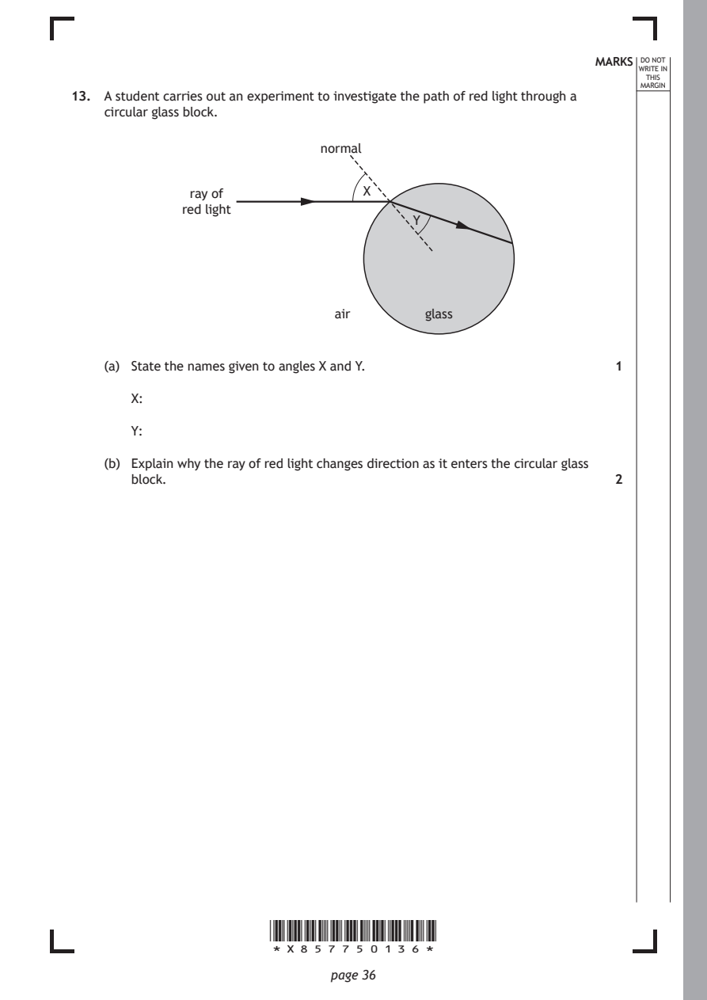
Selectable page text
MARKS _{W}^{D}_{R}^{O}_{I} _{T}^{N}OT
E IN
THIS
MARGIN
13. A student carries out an experiment to investigate the path of red light through a
circular glass block.
normal
ray of X
red light
Y
air glass
(a) State the names given to angles X and Y. 1
X:
Y:
(b) Explain why the ray of red light changes direction as it enters the circular glass
block. 2
*X857750136*
page 36PDF page 37
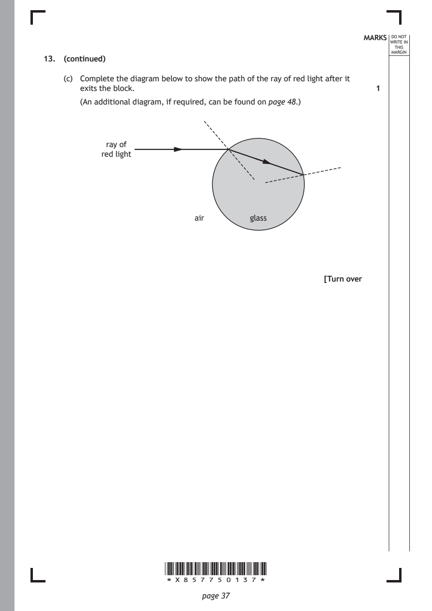
Selectable page text
MARKS _{W}^{D}_{R}^{O}_{I} _{T}^{N}OT
E IN
THIS
MARGIN
13. (continued)
(c) Complete the diagram below to show the path of the ray of red light after it
exits the block. 1
(An additional diagram, if required, can be found on page 48.)
ray of
red light
air glass
[Turn over
*X857750137*
page 37PDF page 38
Section 2, Question 14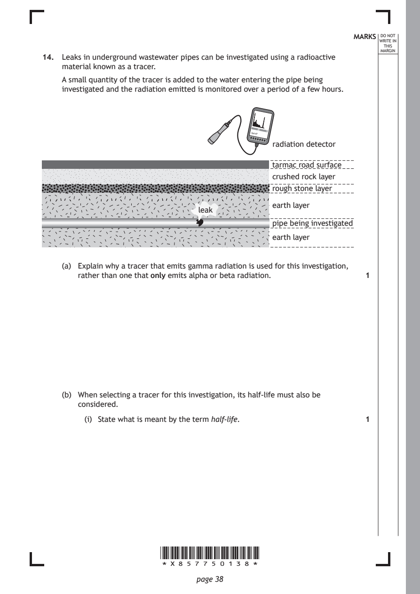
Selectable page text
MARKS _{W}^{D}_{R}^{O}_{I} _{T}^{N}OT
E IN
THIS
MARGIN
14. Leaks in underground wastewater pipes can be investigated using a radioactive
material known as a tracer.
A small quantity of the tracer is added to the water entering the pipe being
investigated and the radiation emitted is monitored over a period of a few hours.
364.97
radiation detector
tarmac road surface
crushed rock layer
rough stone layer
earth layer
leak
pipe being investigated
earth layer
(a) Explain why a tracer that emits gamma radiation is used for this investigation,
rather than one that only emits alpha or beta radiation. 1
(b) When selecting a tracer for this investigation, its half-life must also be
considered.
(i) State what is meant by the term half-life. 1
*X857750138*
page 38PDF page 39
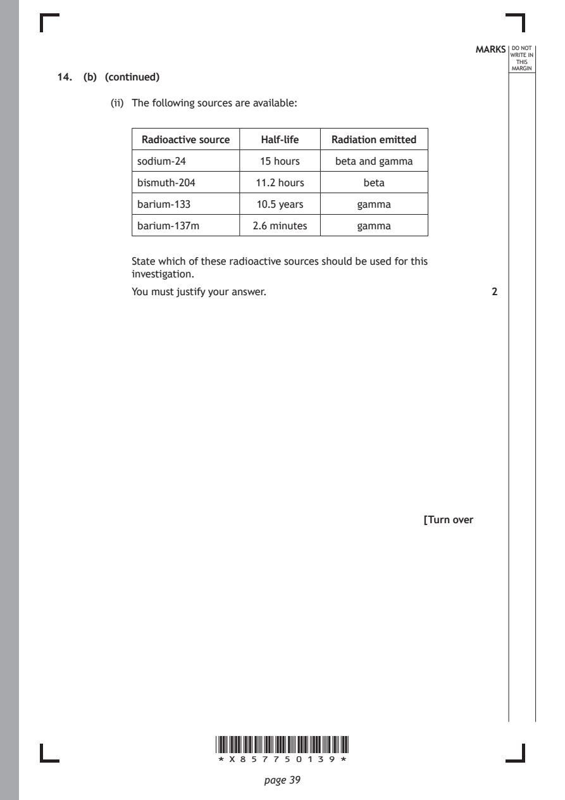
Selectable page text
MARKS _{W}^{D}_{R}^{O}_{I} _{T}^{N}OT
E IN
THIS
MARGIN
14. (b) (continued)
(ii) The following sources are available:
Radioactive source Half-life Radiation emitted
sodium-24 15 hours beta and gamma
bismuth-204 11.2 hours beta
barium-133 10.5 years gamma
barium-137m 2.6 minutes gamma
State which of these radioactive sources should be used for this
investigation.
You must justify your answer. 2
[Turn over
*X857750139*
page 39PDF page 40
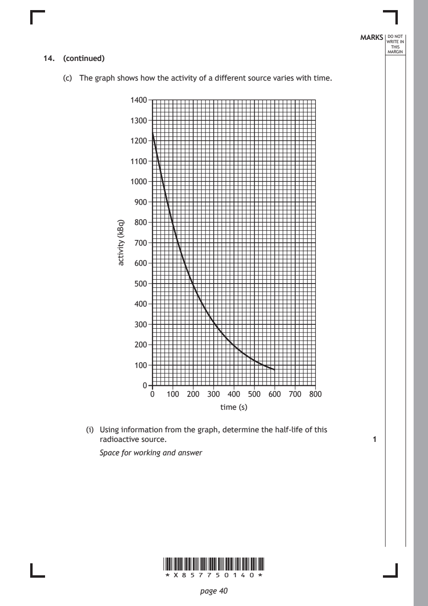
Selectable page text
MARKS _{W}^{D}_{R}^{O}_{I} _{T}^{N}OT
E IN
THIS
MARGIN
14. (continued)
(c) The graph shows how the activity of a different source varies with time.
1400
1300
1200
1100
1000
900
800
700
600
500
400
300
200
100
0
0 100 200 300 400
time (s)
*X857750140*
page 40
)qBk(
ytivitca
500 600 700 800
(i) Using information from the graph, determine the half-life of this
radioactive source. 1
Space for working and answerPDF page 41
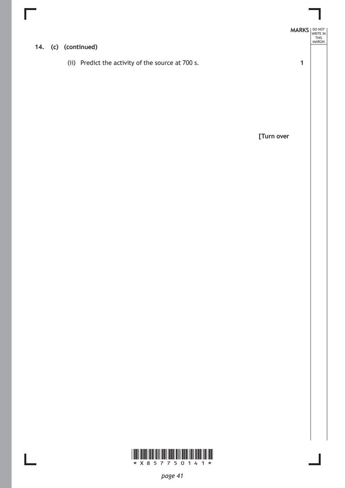
Selectable page text
MARKS _{W}^{D}_{R}^{O}_{I} _{T}^{N}OT
E IN
THIS
MARGIN
14. (c) (continued)
(ii) Predict the activity of the source at 700 s. 1
[Turn over
*X857750141*
page 41PDF page 42
Section 2, Question 15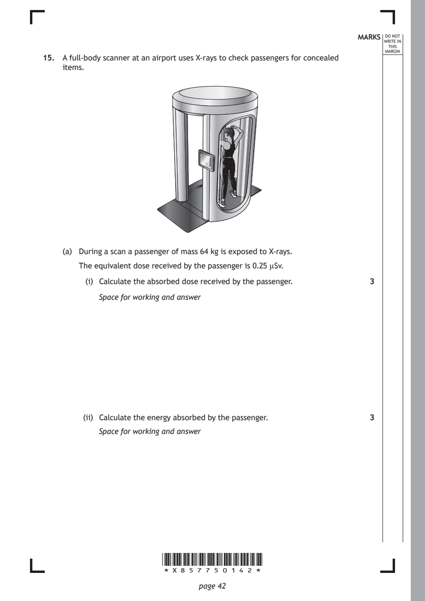
Selectable page text
MARKS _{W}^{D}_{R}^{O}_{I} _{T}^{N}OT
E IN
THIS
MARGIN
15. A full-body scanner at an airport uses X-rays to check passengers for concealed
items.
(a) During a scan a passenger of mass 64 kg is exposed to X-rays.
The equivalent dose received by the passenger is 0.25 µSv.
(i) Calculate the absorbed dose received by the passenger. 3
Space for working and answer
(ii) Calculate the energy absorbed by the passenger. 3
Space for working and answer
*X857750142*
page 42PDF page 43
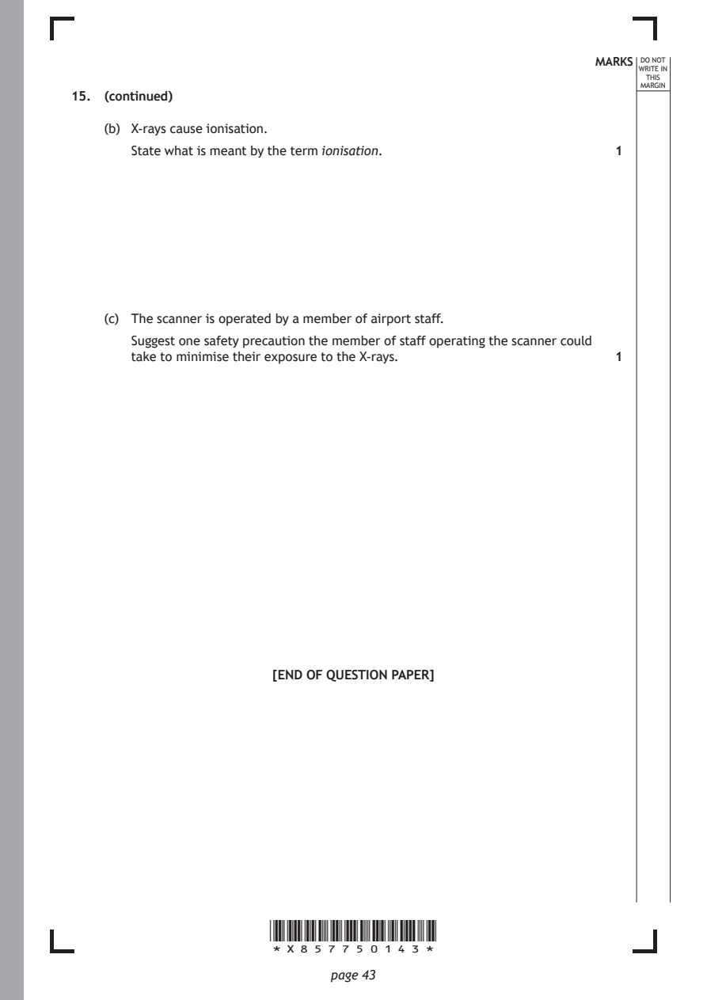
Selectable page text
MARKS _{W}^{D}_{R}^{O}_{I} _{T}^{N}OT
E IN
THIS
MARGIN
15. (continued)
(b) X-rays cause ionisation.
State what is meant by the term ionisation. 1
(c) The scanner is operated by a member of airport staff.
Suggest one safety precaution the member of staff operating the scanner could
take to minimise their exposure to the X-rays. 1
[END OF QUESTION PAPER]
*X857750143*
page 43PDF page 44
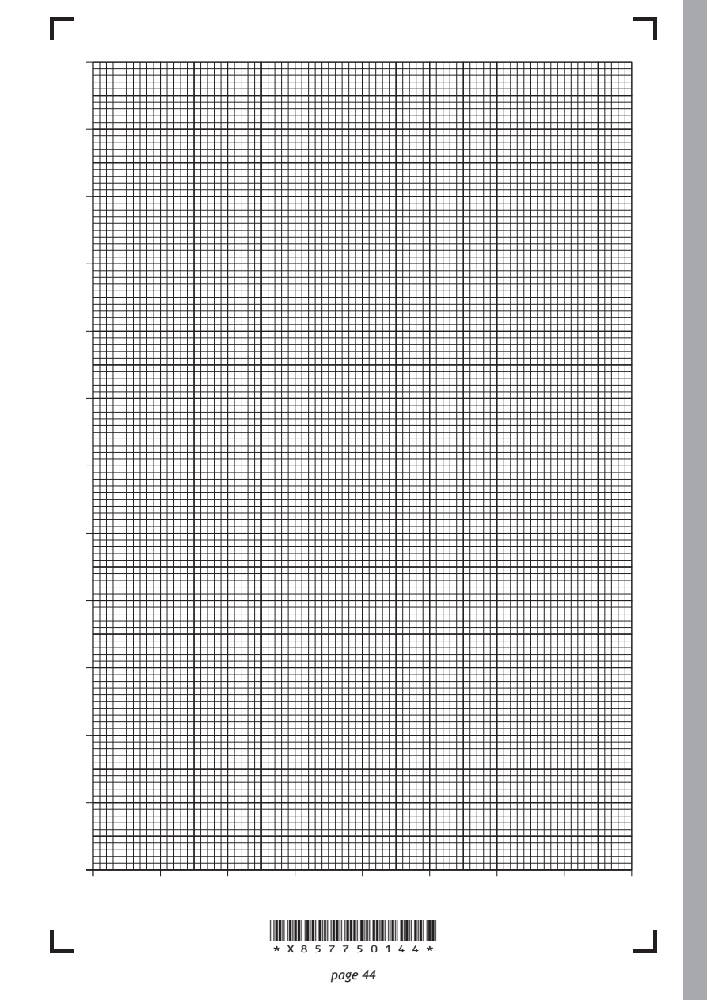
Selectable page text
*X857750144*
page 44PDF page 45
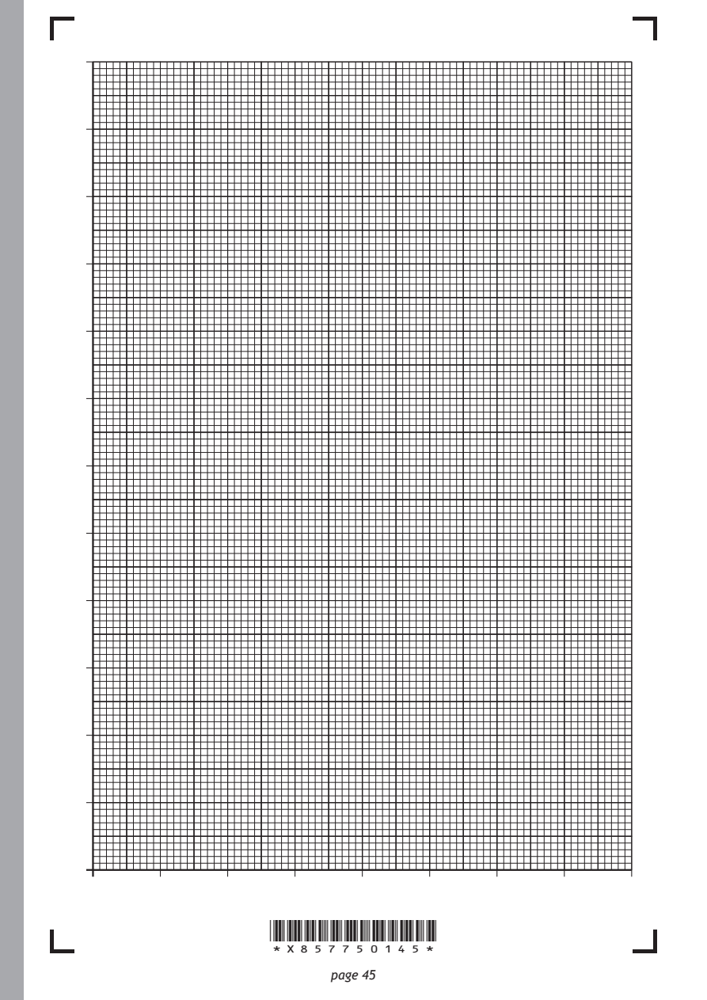
Selectable page text
*X857750145*
page 45PDF page 46
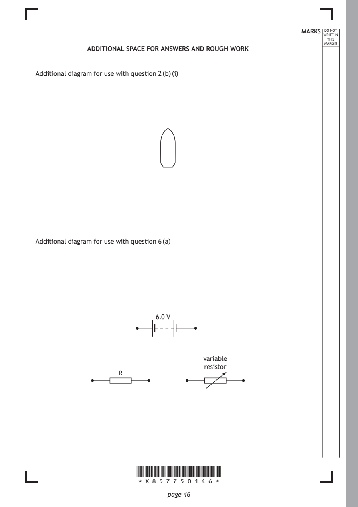
Selectable page text
MARKS _{W}^{D}_{R}^{O}_{I} _{T}^{N}OT
E IN
THIS
MARGIN
ADDITIONAL SPACE FOR ANSWERS AND ROUGH WORK
Additional diagram for use with question 2 (b) (i)
Additional diagram for use with question 6 (a)
6.0 V
variable
resistor
R
*X857750146*
page 46PDF page 47
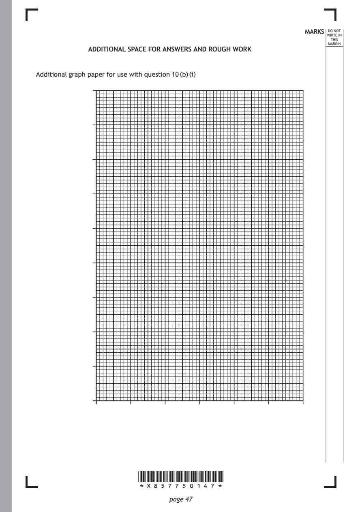
Selectable page text
MARKS _{W}^{D}_{R}^{O}_{I} _{T}^{N}OT
E IN
THIS
MARGIN
ADDITIONAL SPACE FOR ANSWERS AND ROUGH WORK
Additional graph paper for use with question 10 (b) (i)
*X857750147*
page 47PDF page 48
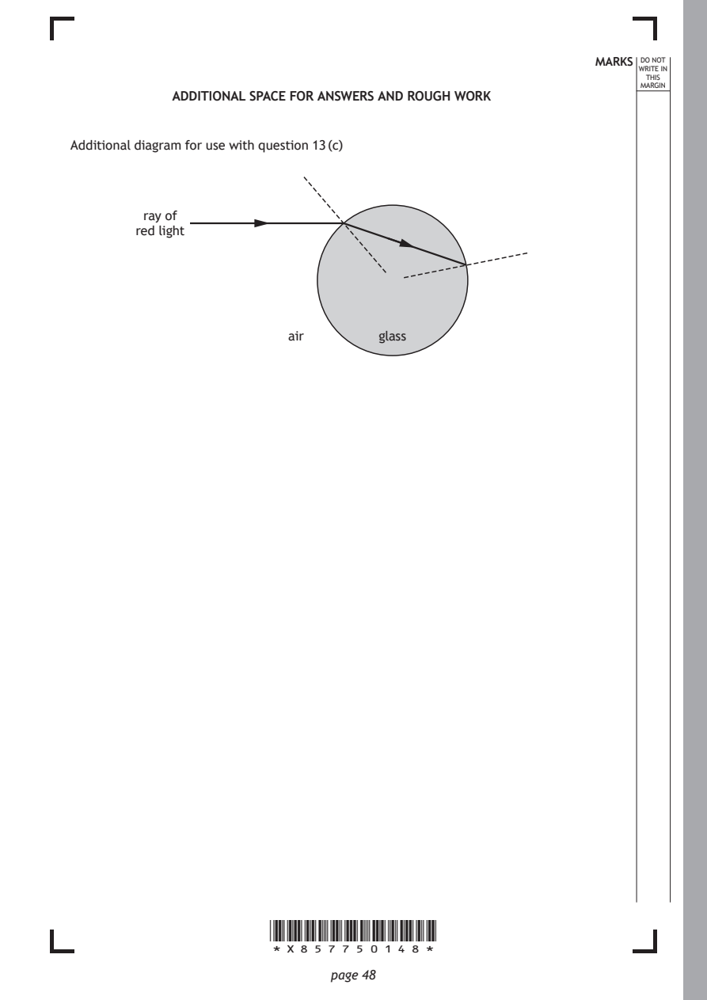
Selectable page text
MARKS _{W}^{D}_{R}^{O}_{I} _{T}^{N}OT
E IN
THIS
MARGIN
ADDITIONAL SPACE FOR ANSWERS AND ROUGH WORK
Additional diagram for use with question 13 (c)
ray of
red light
air glass
*X857750148*
page 48PDF page 49
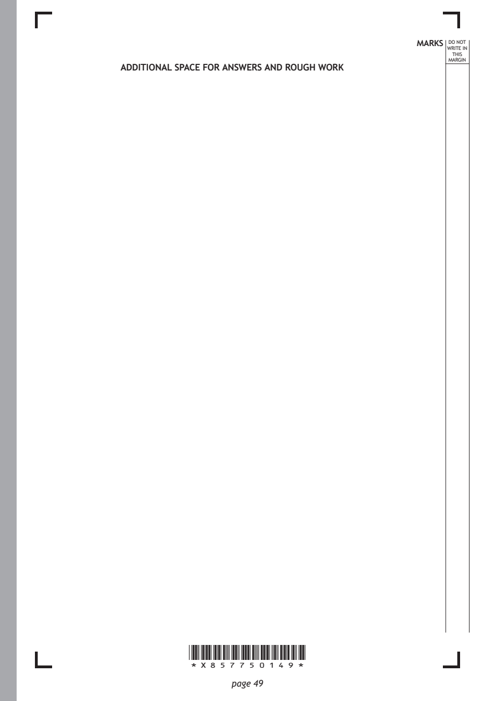
Selectable page text
MARKS _{W}^{D}_{R}^{O}_{I} _{T}^{N}OT
E IN
THIS
MARGIN
ADDITIONAL SPACE FOR ANSWERS AND ROUGH WORK
*X857750149*
page 49PDF page 50
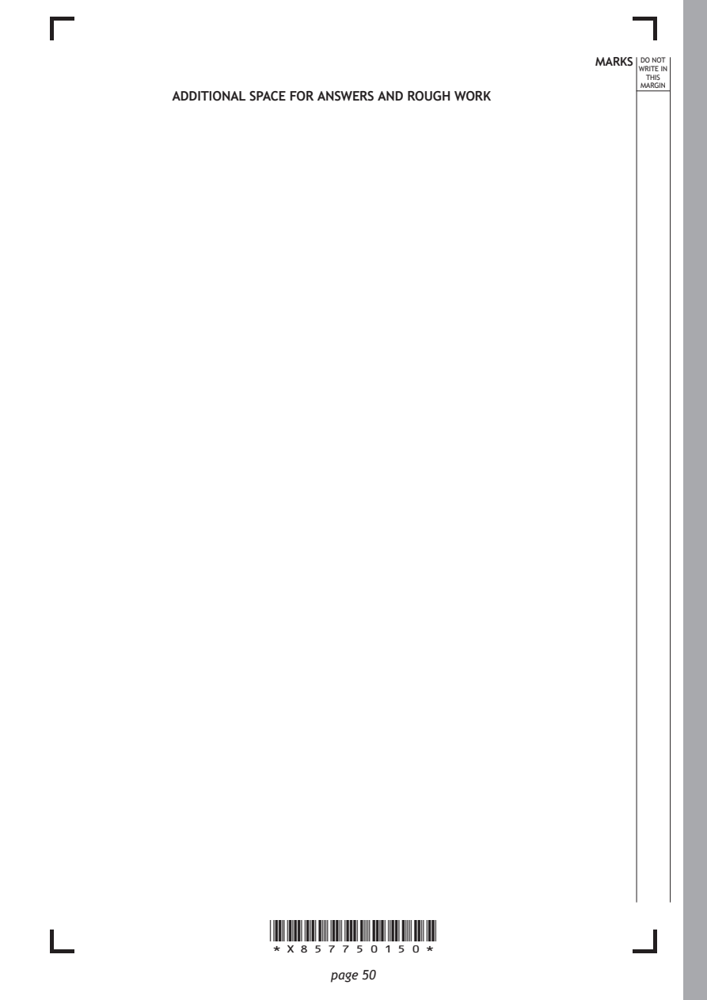
Selectable page text
MARKS _{W}^{D}_{R}^{O}_{I} _{T}^{N}OT
E IN
THIS
MARGIN
ADDITIONAL SPACE FOR ANSWERS AND ROUGH WORK
*X857750150*
page 50PDF page 51

Selectable page text
[BLANK PAGE]
DO NOT WRITE ON THIS PAGE
*X857750151*
page 51PDF page 52
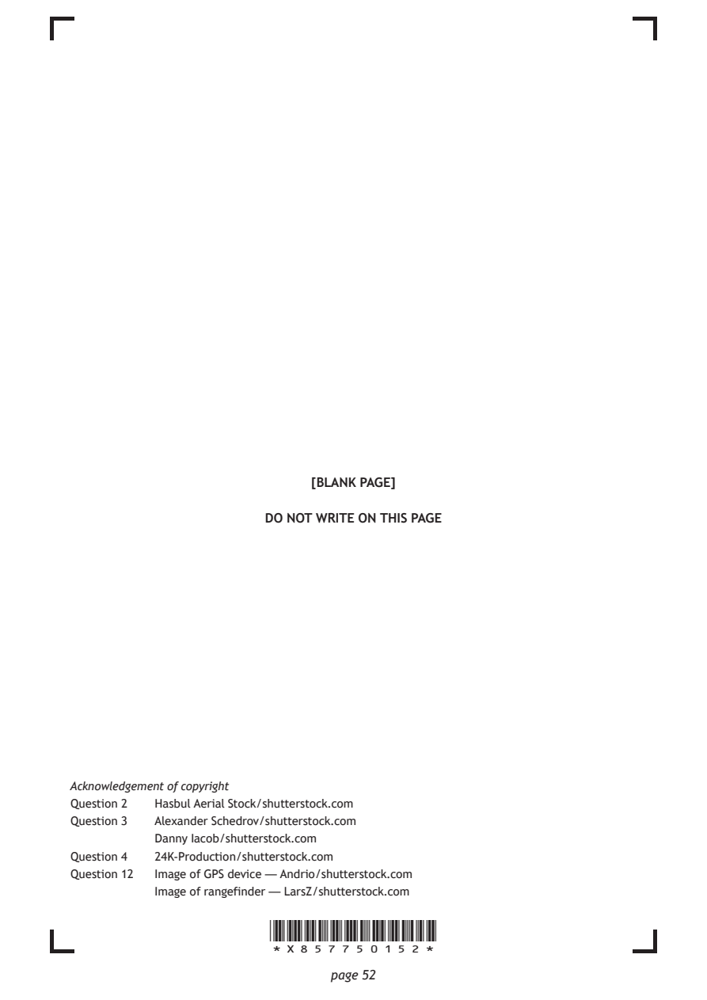
Selectable page text
[BLANK PAGE]
DO NOT WRITE ON THIS PAGE
Acknowledgement of copyright
Question 2 Hasbul Aerial Stock/shutterstock.com
Question 3 Alexander Schedrov/shutterstock.com
Danny Iacob/shutterstock.com
Question 4 24K-Production/shutterstock.com
Question 12 Image of GPS device — Andrio/shutterstock.com
Image of rangefinder — LarsZ/shutterstock.com
*X857750152*
page 52